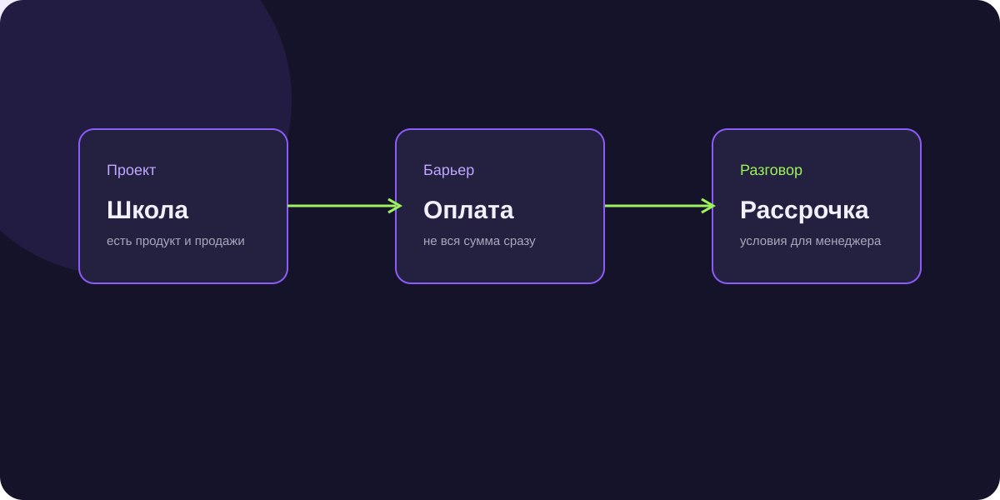

Рассрочка для онлайн-школы: как находить проекты с барьером оплаты
Рассрочка для онлайн-школы становится понятной, когда связана с потерей заинтересованных учеников на этапе оплаты. В кейсе искали действующие образовательные проекты и выводили их на разговор.

Короткий ответ
AI сначала проверял, есть ли у проекта образовательный продукт и продажи. Затем уточнял средний чек, текущие способы оплаты и готовность обсудить подключение рассрочки.
Ситуация онлайн-школы
Человек может хотеть учиться, но не быть готовым внести всю сумму сразу. Для школы это потерянный спрос на последнем этапе воронки. Задача кампании состояла в том, чтобы найти проекты, которым такая проблема знакома.
Кого искали
В выборку входили владельцы онлайн-школ, эксперты с программами, продюсеры запусков и руководители продаж. Приоритет получали люди, которые влияют на выручку, платежи и воронку.
Как проходила квалификация
В разговоре выясняли, какие продукты продаёт проект, как устроены продажи, какой средний чек, какие варианты оплаты уже используют и обсуждали ли рассрочку раньше.
Результат зафиксирован до подключения
В работу передавали квалифицированные лиды и готовность обсуждать условия подключения.
Результат
Кампания принесла 364 квалифицированных лида при стоимости около 190 ₽ за контакт. Менеджеру передавали тип проекта, текущую модель оплаты, отношение к рассрочке и согласованный следующий шаг.
Почему сработало
Рассрочку показывали через бизнес-задачу: снизить барьер оплаты для уже заинтересованной аудитории. Первый контакт не требовал менять всю воронку школы и переводил разговор к условиям только после подтверждения контекста.